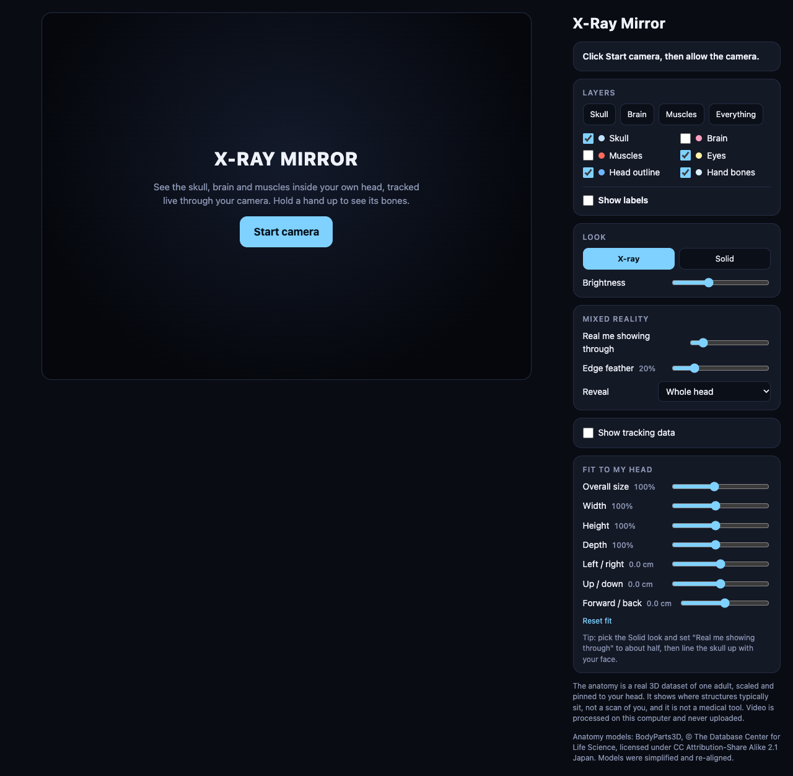

X-Ray Mirror｜攝影機擴增實境解剖鏡：功能、隱私與醫療界線
X-Ray Mirror：解剖模型鏡像，不是真正 X 光
一句話摘要
這是瀏覽器中的擴增實境解剖展示：用攝影機影像與臉手追蹤，將成人頭部與手部的示意結構疊到使用者身上；不是透視或本人醫療影像，不能診斷或量測。
介面與用途
頁面提供頭骨、大腦、肌肉、眼球、頭部輪廓、手骨與標籤的開關和預設；X-ray／Solid 外觀、亮度、真人透出比例、邊緣柔化、左右或局部揭露、追蹤資訊，以及頭部模型大小、寬高深和位置調整。可作為介紹解剖位置、3D 疊合與視覺錯覺的教育素材，但頁面明說資料來自一名成人的 3D 資料集，經縮放對齊，呈現典型位置而非掃描本人；不能用來判讀疾病或取代專業醫療。
攝影機與資料流
固定版本程式以點擊按鈕後的 `getUserMedia` 請求攝影機，MediaPipe Face Landmarker 與 Hand Landmarker 對影片做偵測，Three.js 繪製模型；選項存於瀏覽器 localStorage 的 `xr_settings`。頁面聲稱影片在本機處理、從未上傳。靜態檢視主程式未見明確影片上傳程式碼，但未審計外部函式庫、未實測攝影機啟動後網路流量，不能保證所有版本或依賴皆不外傳。
載入 Three.js、MediaPipe 程式／執行資源會連到 jsDelivr，追蹤模型取自 Google Cloud Storage；網路服務商可收到正常連線資訊，如 IP。這不是完全離線工具；外部程式更新、供應鏈、瀏覽器擴充套件及網站未來變更都可能影響風險。只在可信裝置與環境使用，先檢查周遭，按需授權攝影機，結束後關閉分頁並在瀏覽器撤銷權限；共享電腦可清除此網站資料。勿拿他人影像操作或公開截圖而未取得同意。
程式與授權
截至 2026-11-11，GitHub 樹固定於 `41e241309d2a269e3740c1f013e4f13f234dbf5b`，只有兩個內容相同的 HTML 檔，含內嵌模型資料與程式，未見 README 或 LICENSE；GitHub API 亦未辨識程式授權。公開可看不代表有權任意複製、修改或商用程式，應另向權利人確認。頁面將解剖模型歸功 BodyParts3D／Database Center for Life Science，聲明採 CC BY-SA 2.1 Japan 並經簡化、重新對齊；此模型授權聲明不等於整份程式及外部套件均為同一授權，重用時須核實原始素材來源、署名、相同方式分享及各依賴條款。
代表畫面與查核範圍

畫面為 2026-11-11 的網站實際截圖，攝影機未啟動，已檢查無可見人臉或個資；介面著作權歸原權利人，截圖再利用授權未確認。本次只檢視公開頁面、程式與儲存庫樹，未啟動攝影機、執行安裝器或測試追蹤準確率，並非完整安全稽核；實際功能、隱私與授權可能隨版本變動。